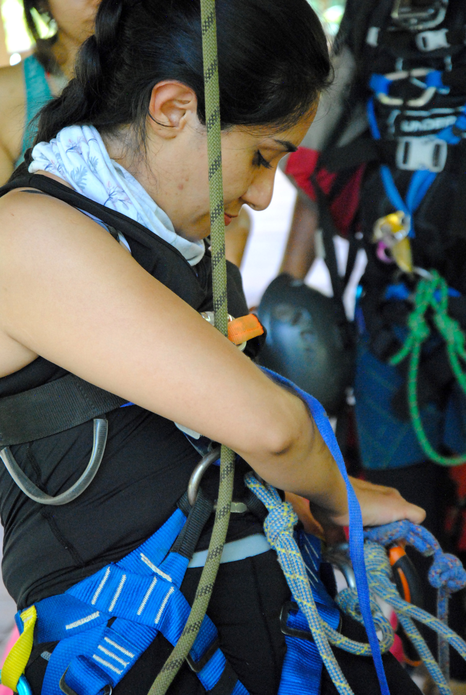
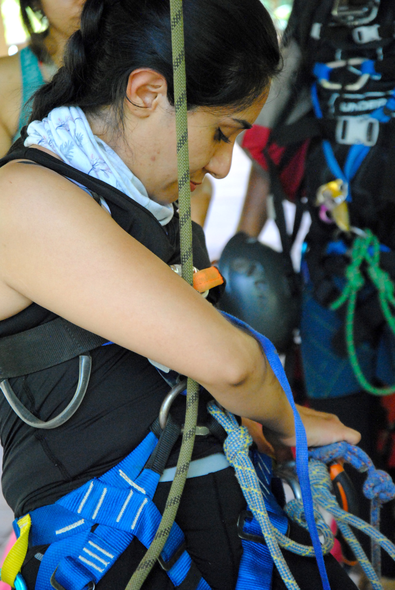

Me agradan las actividades al aire libre como el senderismo, el rappel y la escalada.
Aprendí a hacer cupcakes durante la cuarentena y ahora puedes probarlos! Puedes visitar mi página de Facebook dando click en la imagen
Hola! esta es mi página personal, te invito a que conozcas un poco más de mi
Me agradan las actividades al aire libre como el senderismo, el rappel y la escalada.
Aprendí a hacer cupcakes durante la cuarentena y ahora puedes probarlos! Puedes visitar mi página de Facebook dando click en la imagen
Soy física, tengo una maestría en ciencia e ingeniería de materiales y he trabajado en el área de protección radiológica.
Te dejo mi Currículum por si quieres saber más de mi formación académica y mi experiencia profesional.